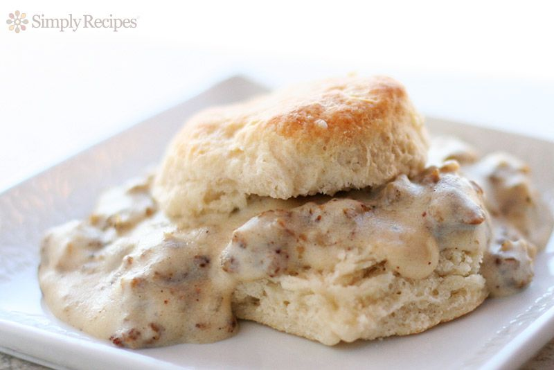

Simple Biscuits & Gravy

Description
The first recipe I ever learned. The ultra simple biscuits & gravy that my Grandma taught me so I could begin to feed myself and she could relax in the morning.
Ingredients
- Butter biscuits
- Breakfast sausgage
- Salt & Pepper
- Flour
- Milk
Steps
- Cook the biscuits per package instructions.
- Begin cooking the sausage on med-hi heat. Break up into small pieces as the sausage cooks.
- Add the flour and stir until the oil absorbs. Then add the milk, salt, and peper and stir well. Lighly boil and stir until the your desired sauceyness.
- Place the gravy over biscuits and enjoy!